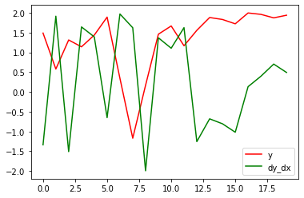

Show code
#collapse
import tensorflow as tfMay 16, 2021
“The fifth notebook in the series solving exercises from d2l.ai, this blog tries to test and understand the working of the autodiff functionality in tensorflow”
As we have learnt in our previous lessons about the chain rule and its usage to differentiate composite functions, applying the chain rule for a second time quickly adds up the number of times that we need to differentiate. Let’s take an example,
Suppose that functions \(y=f(u)\) and \(u=g(x)\) are both differentiable, then the chain rule states that,
\[\frac{dy}{dx} = \frac {dy}{du} * \frac {du}{dx}\]
let’s assume \(a=\frac {dy}{du}\) and \(b = \frac {du}{dx}\)
so a second derivative of that would be (using product rule here),
\[\frac{d^2y}{dx^2} = a*\frac{db}{dx} + b * \frac {da}{dx} \]
We can see that the number of differentiations have doubled for this simple composite function. This is a simple reason for why the calculation is expensive for the second derivative.
Let’s check value of x
<tf.Variable 'Variable:0' shape=(4,) dtype=float32, numpy=array([0., 1., 2., 3.], dtype=float32)>--------------------------------------------------------------------------- RuntimeError Traceback (most recent call last) <ipython-input-4-87ae3eb74e70> in <module>() ----> 1 t.gradient(y, x) /usr/local/lib/python3.7/dist-packages/tensorflow/python/eager/backprop.py in gradient(self, target, sources, output_gradients, unconnected_gradients) 1025 """ 1026 if self._tape is None: -> 1027 raise RuntimeError("A non-persistent GradientTape can only be used to" 1028 "compute one set of gradients (or jacobians)") 1029 if self._recording: RuntimeError: A non-persistent GradientTape can only be used tocompute one set of gradients (or jacobians)
I get the above error when I try to run the backward propagation two times, looking at the documentation of tf.GradientTape it is specified that
By default, the resources held by a GradientTape are released as soon as GradientTape.gradient() method is called. To compute multiple gradients over the same computation, create a persistent gradient tape. This allows multiple calls to the gradient() method as resources are released when the tape object is garbage collected.
TLDR: Try using a vector/matrix in the function used to demonstrate gradient calculation on a control flow.
Let’s bring that function used in the lesson
In the lesson they have used single value random variable, the question asks us to use a vector or matrix in its place.
Let’s use the following random vector with shape (1,2)
<tf.Variable 'Variable:0' shape=(1, 2) dtype=float32, numpy=array([[0.02355854, 0.7092207 ]], dtype=float32)>The differentiation
<tf.Tensor: shape=(1, 2), dtype=float32, numpy=array([[2048., 2048.]], dtype=float32)>We can try using a bigger matrix now.
<tf.Variable 'Variable:0' shape=(5, 3, 2) dtype=float32, numpy=
array([[[ 1.075387 , 0.3135932 ],
[-0.9573184 , 0.06560528],
[-0.18362595, -0.53352755]],
[[ 0.48579827, 0.7452166 ],
[ 0.08363861, -1.1838139 ],
[-0.23465118, -0.7641606 ]],
[[-1.6045334 , -0.50408304],
[-0.82722497, -0.26551095],
[ 0.5110664 , 0.68872666]],
[[ 0.9107071 , 1.2259225 ],
[ 0.43528086, -0.36280373],
[-1.7287321 , -0.54161024]],
[[ 0.01597405, -0.01879804],
[ 1.75937 , 1.2245483 ],
[ 0.04912755, 0.9361492 ]]], dtype=float32)><tf.Tensor: shape=(5, 3, 2), dtype=float32, numpy=
array([[[256., 256.],
[256., 256.],
[256., 256.]],
[[256., 256.],
[256., 256.],
[256., 256.]],
[[256., 256.],
[256., 256.],
[256., 256.]],
[[256., 256.],
[256., 256.],
[256., 256.]],
[[256., 256.],
[256., 256.],
[256., 256.]]], dtype=float32)>So when we differentiate a single value, the resultant gradient vector is similar in shape, as in the cases of the higher dimensional vectors/matrices.
I did not get what the question was trying to test the reader on, I read the discussion, A person said to use tf.hessians to a related question. Let’s see why
Let’s take a look at the matrix we have
<tf.Variable 'Variable:0' shape=() dtype=float32, numpy=-1.1861123>The following is the suggested way to calculate a hessian based vector product
The following is modified based on this to see what happens.
WARNING:tensorflow:11 out of the last 11 calls to <function pfor.<locals>.f at 0x7f5d138bd5f0> triggered tf.function retracing. Tracing is expensive and the excessive number of tracings could be due to (1) creating @tf.function repeatedly in a loop, (2) passing tensors with different shapes, (3) passing Python objects instead of tensors. For (1), please define your @tf.function outside of the loop. For (2), @tf.function has experimental_relax_shapes=True option that relaxes argument shapes that can avoid unnecessary retracing. For (3), please refer to https://www.tensorflow.org/guide/function#controlling_retracing and https://www.tensorflow.org/api_docs/python/tf/function for more details.Both the methods return the same result for the small vector, where the second order derivative is turning into None, I am not sure why…, thinking about the question asked, since \(f(a)\) is no longer scalar, the resultant gradient is also a vector/matrix. So I am again not sure of the suggestion given.
The example given in the lesson was a little complex, I will use a simple control flow, to see if we can calculate the gradient with autodiff.
Let’s start with a simple transformation, We all know the gradient of an exponential function is the same.
Let’s take a single value
<tf.Variable 'Variable:0' shape=() dtype=float32, numpy=1.5236874>So now we can try performing some transformations on the value.
\[y \rightarrow f(x) \rightarrow \left\{\left( \eqalign{ \sin{x}, if \sum{x}_n/n > 0.5\\ 2 * \cos{x}, else\\ } \right) \right\}\]
<tf.Variable 'Variable:0' shape=(20, 1) dtype=float32, numpy=
array([[ 0.7322539 ],
[-1.2769327 ],
[ 0.85455877],
[-0.96424586],
[-0.7693011 ],
[ 0.33113363],
[-1.3973997 ],
[-2.1953282 ],
[ 1.4873 ],
[-0.7533999 ],
[-0.58519673],
[-0.94799626],
[ 0.67873853],
[ 0.34689212],
[ 0.4139984 ],
[ 0.5342669 ],
[-0.06651524],
[-0.19935435],
[-0.3597326 ],
[-0.24857213]], dtype=float32)>The differentiation
<tf.Tensor: shape=(20, 1), dtype=float32, numpy=
array([[-1.337095 ],
[ 1.9142638 ],
[-1.5085627 ],
[ 1.6432385 ],
[ 1.3912666 ],
[-0.6502306 ],
[ 1.9700089 ],
[ 1.6224738 ],
[-1.9930325 ],
[ 1.368245 ],
[ 1.1047268 ],
[ 1.6244967 ],
[-1.2556233 ],
[-0.6799534 ],
[-0.8045463 ],
[-1.0184205 ],
[ 0.13293241],
[ 0.396073 ],
[ 0.7040479 ],
[ 0.49204046]], dtype=float32)>
The graph seems to be validating differentiation, since we can see the green line following the red line
Let’s setup the required variables